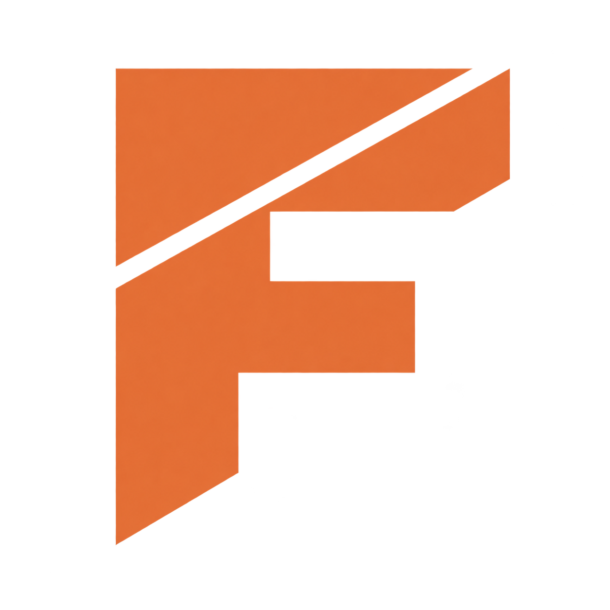

CARÁCTER
Sostén tu palabra.
Conoce lo que defiendes. Pon límites, toma decisiones y ten el valor de actuar aunque haya miedo.
CRITERIO · INTEGRIDAD · VALENTÍA

FORJADOS Ser parteHERMANDAD DE HOMBRES · JALISCO / EN LÍNEA
Hay una vida que quieres construir.
Empieza a trabajar en ella con hombres que
te escuchen, te reten y cumplan su palabra.
Gratuito · Participa, colabora y crece cada semana
Una conversación que evitas. Un proyecto que sigue en tu cabeza. La sensación de que podrías estar viviendo de otra manera.
Forjados es un lugar para ponerlo sobre la mesa y hacer algo al respecto. Hombres que comparten lo que saben, reconocen lo que les cuesta y se acompañan para avanzar.
Vienes con algo que trabajar.
Te vas con una misión.
Sostén tu palabra.
Conoce lo que defiendes. Pon límites, toma decisiones y ten el valor de actuar aunque haya miedo.
Transforma tu realidad.
Construye recursos, desarrolla habilidades y gana influencia para cambiar tu vida y el entorno que te rodea.
Conecta con confianza.
Cuida tu cuerpo y tu apariencia. Fortalece tu expresión, tu escucha y la forma en que te relacionas.
Tu propósito marca el rumbo. La hermandad sostiene el trabajo.
El trabajo sucede en tu vida. Nos reunimos para darle dirección y continuidad.
Elige cómo participarEn persona, comenzamos con una actividad física compartida y adaptable. En línea, abrimos un espacio para estar aquí y escuchar.
Comparte una victoria, una dificultad o lo que pasó con tu misión. Todos tienen voz. Tú eliges cuánto compartir.
El capitán propone un tema. Preguntamos, compartimos experiencia y ponemos a prueba nuestras ideas.
Define qué harás y cuándo. La siguiente semana vuelves para contar lo que pasó y decidir tu próximo paso.
FIRMEZA Y VALENTÍA
TENER FIRMEZA PARA DECIR «NO».
TENER HUEVOS PARA DECIR «SÍ».
PRESENCIAL
Viernes · 7:00 a 8:30 p. m.
Casa club de El Origen · Desde el 25 de septiembre de 2026.
Ver ubicación ↗Reto físico compartido, conversación y una misión para la semana.
EN LÍNEA
Miércoles · 7:00 p. m.
La misma hermandad y compromiso, estés dentro o fuera de Jalisco.
Hora de Ciudad de México · Horario en línea por confirmar · Cupo limitado.
EL ACUERDO ENTRE HERMANOS
Abierto a hombres con distintas historias y creencias. Nos une la disposición a crecer y a cuidar este espacio.
Asiste y trabaja tu misión. El compromiso es semanal. Las ausencias por salud, trabajo o emergencia se justifican.
Cuida la confianza. Las historias de tus compañeros se quedan en el grupo. Escuchamos y confrontamos con respeto.
Aporta y déjate acompañar. Todos somos hermanos. El capitán mantiene el ritmo y cuida los acuerdos.
ANTES DE DAR EL PASO
No. Puedes llegar buscando dirección o con experiencia que quieras compartir. El único requisito es participar, colaborar y crecer cada semana. No hay entrevista de selección.
Es gratuito. El único requisito es participar, colaborar y crecer cada semana.
Forjados es una hermandad de desarrollo personal, abierta a cualquier creencia. Podemos hablar de lo que sentimos, pero no ofrecemos terapia, diagnósticos ni tratamiento psicológico.
No necesitas experiencia ni una condición física determinada. Las actividades se adaptan y la participación es voluntaria. Cualquier práctica de contacto requiere supervisión adecuada. Puedes detener una actividad o elegir una alternativa.
Hablamos de lo que ocurrió y de qué necesitas ajustar. Si corresponde reparar el compromiso, tú propones una acción y la acuerdas con el capitán. El objetivo es recuperar la confianza en tu palabra, sin humillaciones.
No grabamos ni compartimos historias, capturas o datos personales de otros miembros. Puedes hablar de tus propios aprendizajes. Ante un peligro inmediato para alguien, se buscaría ayuda compartiendo solo lo necesario. Los acuerdos se explican al ingresar.
EL PRIMER PASO ES TUYO
Estamos formando el primer grupo. El único requisito es participar, colaborar y crecer cada semana.
ENCUENTRO PRESENCIAL
Ven dispuesto a hablar, escuchar y salir con una misión para tu semana.
Agrega a tu calendario
Guarda la serie de todos los viernes, del 25 de septiembre de 2026 al 24 de septiembre de 2027. En Apple Calendar, abre el archivo descargado para agregarla.
Puedes configurar avisos en tu calendario. Los cambios posteriores de horario o lugar no se actualizarán automáticamente en estas copias.
Gratuito · Cupo limitado